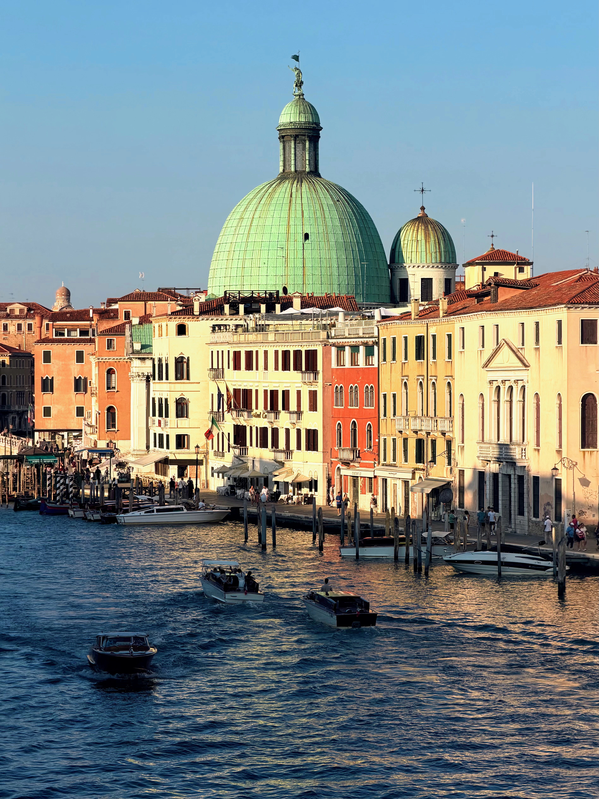
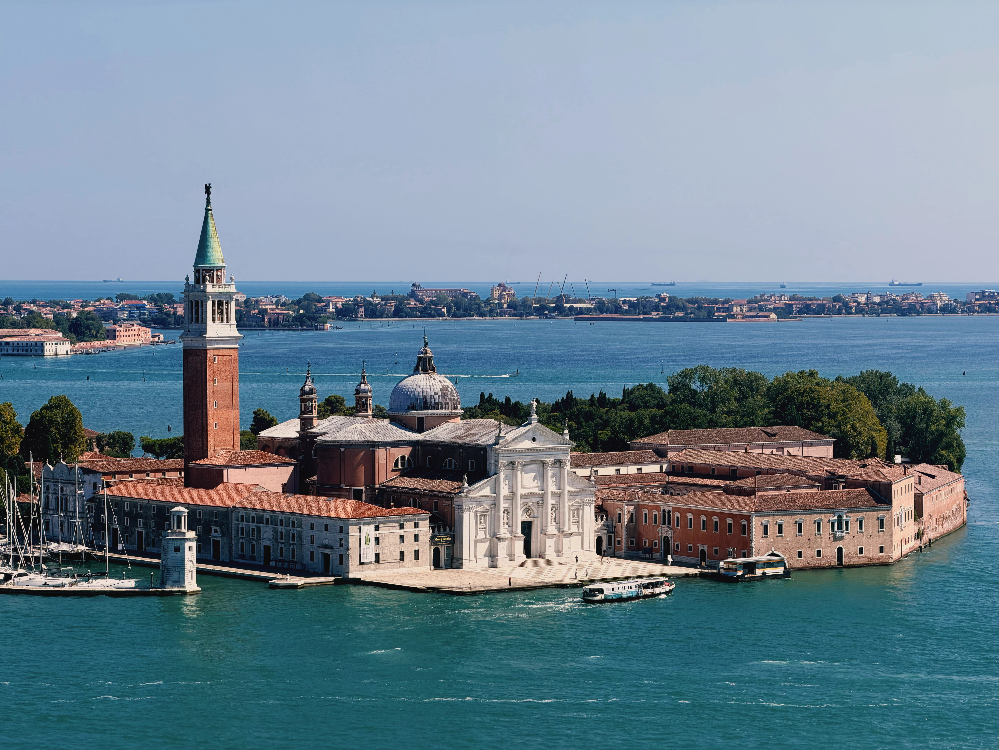
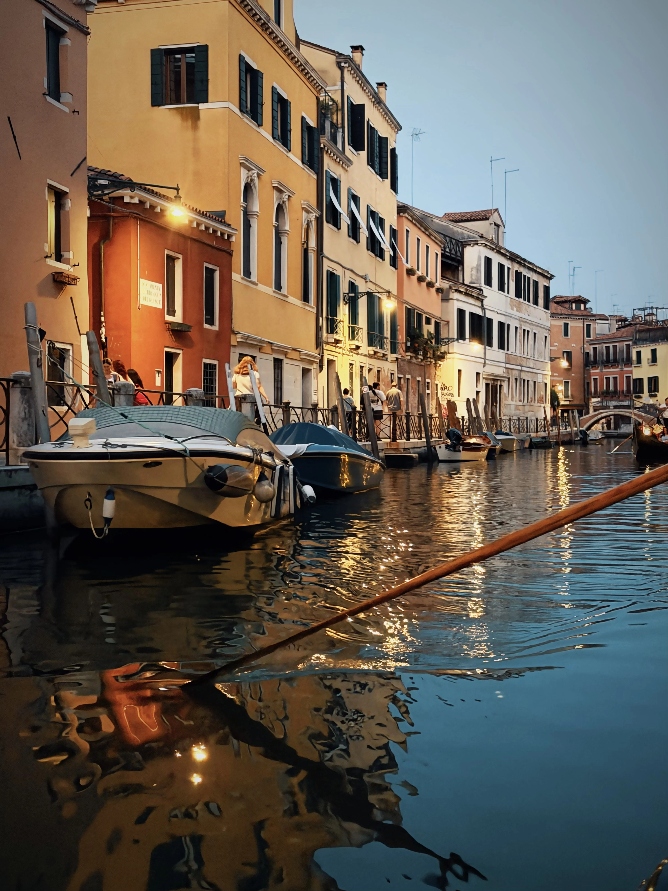
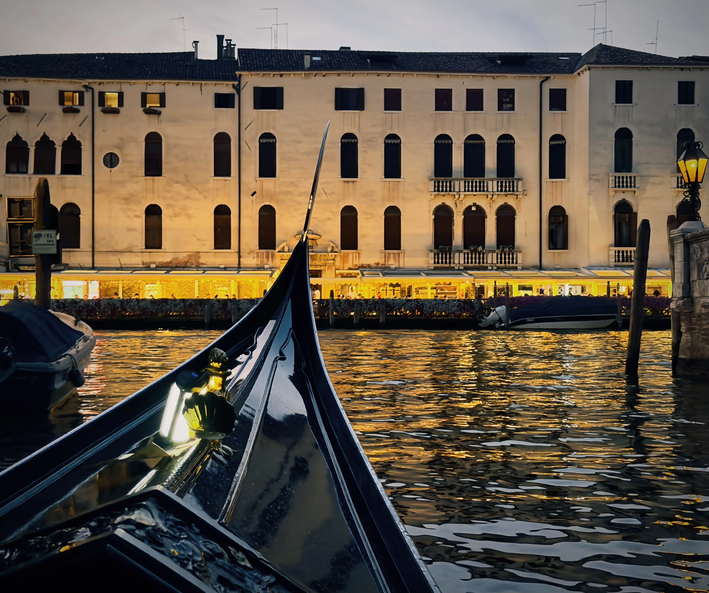
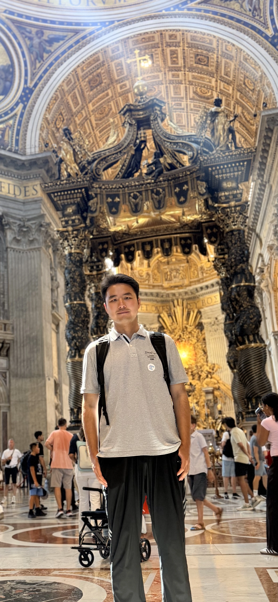
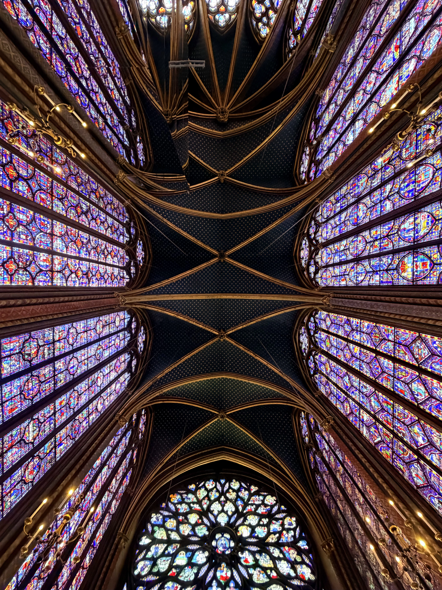
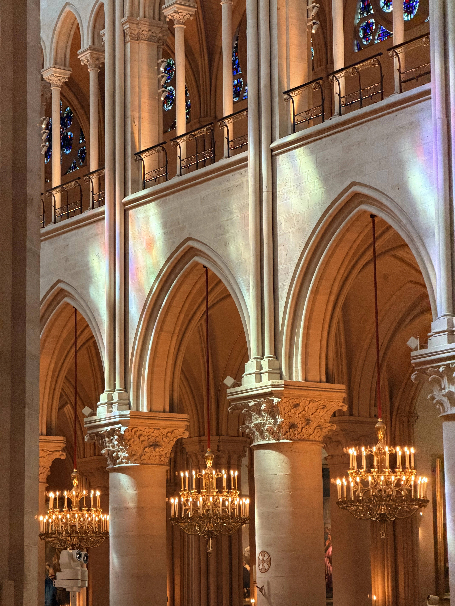
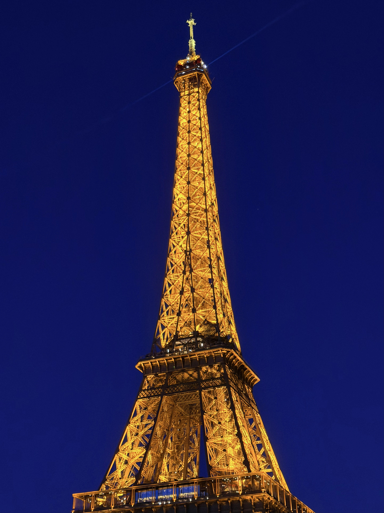
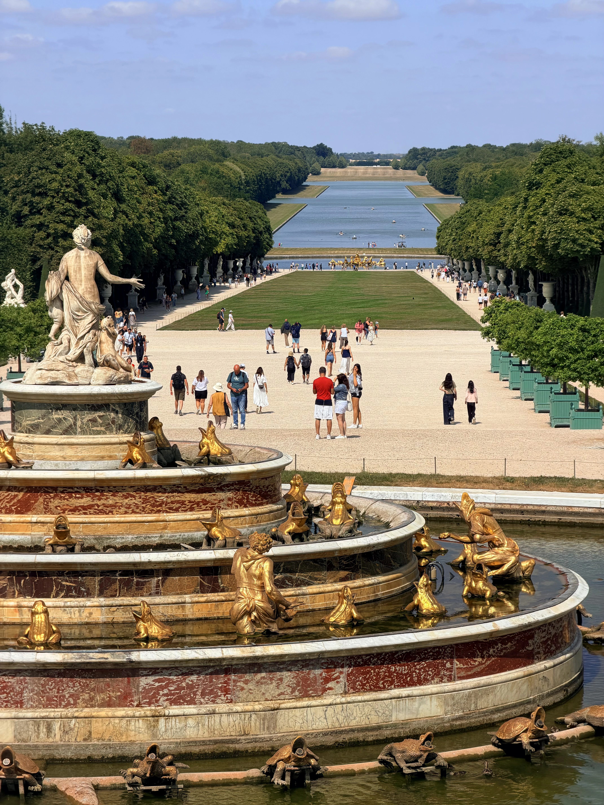

Somewhere on the Adriatic, time seems to slow down Venezia, Veneto, Italia July 29, 2026




We are all pilgrims, merely meeting here by chance Città del Vaticano July 27, 2026

Paris unfolds in light and shadow Paris, Île-de-France, France July 20–24, 2026



